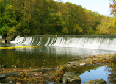

Water Recycling Centre of Excellence Opens in Brisbane

A new Centre of Excellence that will lead the way in developing new water technology was opened today in Brisbane by the Minister for Climate Change, Energy Efficiency and Water, Senator Penny Wong.
MORE DETAIL
Desal plant ramps up to supply quality drinking water

The Gold Coast Desalination plant at Tugun has increased output and is helping to ensure a continued supply of high quality drinking water for South East Queensland.
MORE DETAIL